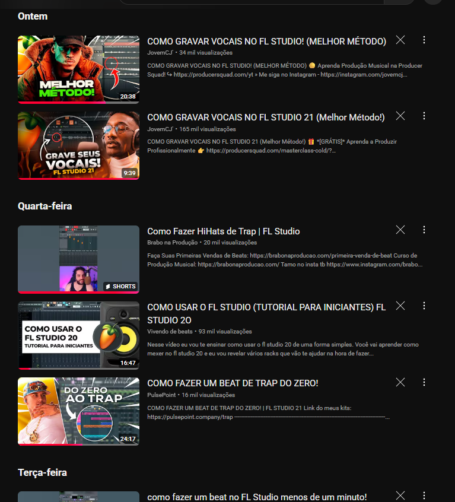
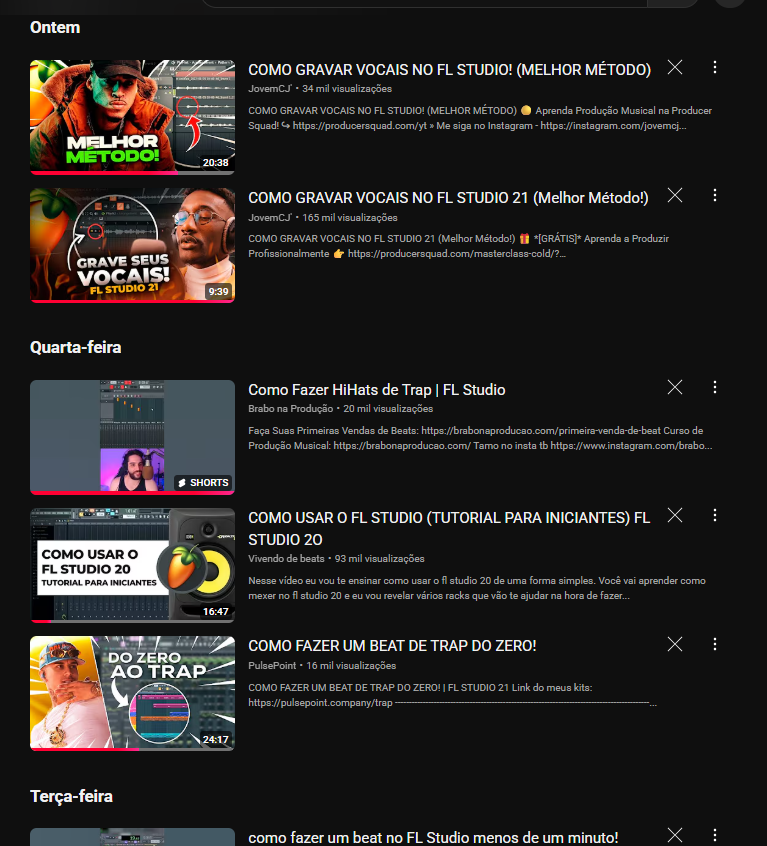
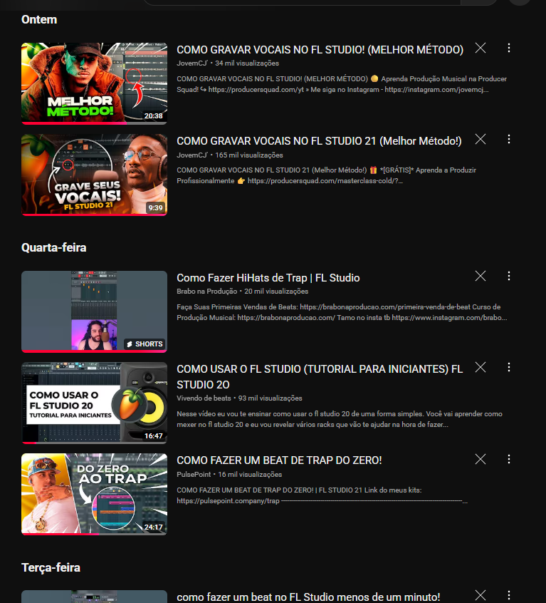

toda essa distancia entre a gente baby ja não existe isso mais tão de repente vou fazer um pedido amor pra estrela cadente que Deus abençoe e isso não seja só um pente

Início/Ideia: não lembro exatamente quando foi mas recentemente senti vontade em aprender a criar beats (ou tentar kkkk) é a parte que eu mais gosto das músicas então fui ver como me saia, pouco tempo depois dessa ideia pensar em juntar o útil ao agradavel, e se eu fizesse um beat pra aquela garota... acho que seria uma maneira diferente de interagir com ela ao inves das mensagens de sempre, mas melhor que isso, "e se eu fizesse uma música" kkkk. Produção: o primeiro passo era descubrir um app que eu pudesse fazer isso, ja tinha ouvido falar do FL Studio antes então foi nele que eu fui msm, consegui pagar 20 conto em um que ja vinha na versão pro e com uns bonus lá (a versão original custa 450 conto kkkkk) dps disso tive que ver muitos vídeos para entender o mínimo de como aquilo funcionava, o bgl parece um painel de um avião, e dps de tanta luta pra n desistir da ideia tive que mudar a ideia de fazer o beat e pegar um beat free do youtube (me economizaria tempo e eu conseguiria estudar em como melhorar a voz) é díficil mas até que deu certo. Composição: aqui eu vi que fazer uma música não era só ligar o mic e começar a cantar, a criatividade muitas vezes sumiu e eu conseguia ir criando em média dois versos por tentativa, além das rimas, pra musica ter uma sonoridade agradavel é recomendado que os versos estejam metrificados, o que prejudica um pouco mais as ideias, mas acho que ficou bom, eu não queria criar algo tão genérico e como não conheço muito sobre vc tive que ir colhendo insights te stalkeando pelo insta e pelo tiktok (foi por uma boa causa). Considerações Finais: Apesar de todo o trabalho foi divertido fazer isso, aprendi bastante e fiquei feliz com o resultado, afinal é a primeira vez que eu faço todos esses processos (o risco de ser algo para agradar é uma motivação muito boa, adrenalina vem forte kkkk). Bom, no mais foi isso, veja isso como um presente feito com carinho, cuidado e dedicação, não quero te pressionar a nenhuma interação depois disso, só foi uma maneira arriscada e diferente que eu encontrei de chamar sua atenção, mas, "Se você quiser".